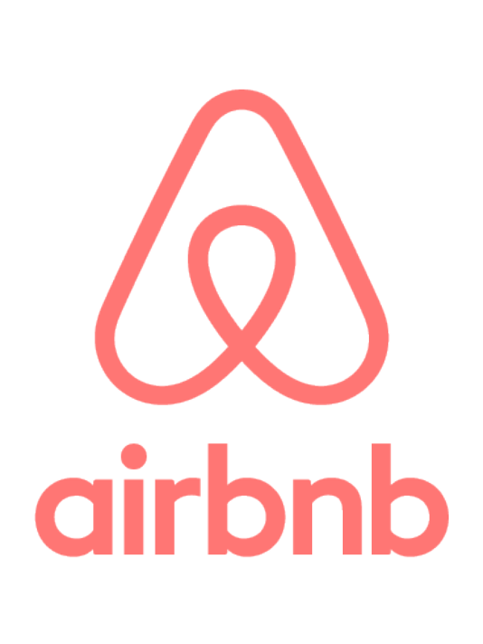

Research
First Term Research
Workflow Manager
A workflow manager combines the usage of BPMN (Business Process Model Notation) diagrams with the organizing of workflow for the processes, allowing the application to present different medical forms to the user depending on which stage the user is in the process. Initially, we looked through some open software workflow managers to have a clearer understand of how it functions. Some examples that we looked through were ProcessMaker, Activity and Interstage. At the time, we were considering Node as the web framework for our application, so we found a few node packages that could help with the job. The “bpmn” module allows the illustration of process oriented business logic, which allows tasks to be arranged in a workflow. This would be ideal for Node.js as the interactions in this module is asynchronous, which is a distinct characteristic for Node. Another option that we found was the “wf” module, which is an ongoing open source project. This module also allows the orchestration of processes, allowing the programming of sequences of tasks, in our case, producing forms after an event is triggered or after a task is completed. Even though “wf” is a more specified module compared to “bpmn”, some functions are not specified as it as relatively new compared to “bpmn”. After deeper understanding of what a workflow manager does, and how large the scale of this component, we decided that our sub-team of three people is not sufficient to complete the component in the time given. After discussing this with our client, we decided to remove this component from the list of requirements. But this was still a notable research done, thus being listed here.
Frameworks
As a team, we investigated several front-end and back-end frameworks before ultimately making the decision to use Electrode. Amongst the front-end frameworks considered were React, Angular, and the back-end servers was Node JS. In the end, in order to standardise the means of coding for every subteam in the Peach Cancer Team, we voted on using Electrode as the main framework. Electrode is a combination of React, Redux and Node, allowing programmers to combine both front-end and back-end source code into a singular directory, making it easier for other programmers to collaborate upon it. For our sub-team, this would allow us to produce front-end components that would be able to retrieve patients’ data from the OpenEHR database provided by the other sub-teams of the project. Specifics of the research can be found in the Research folder below.

ReactJS: React is in fact a Javascript library, which allows interactive functions for the user interfaces. React focusses on a modular approach. In other terms, it encourages the reusing of React components across the application. React was initially considered the main front-end framework for our application, as the UCL Peach Cancer teams wanted a modern functional framework across all sub-teams.
Pros of React:
- Components can be reused easily.
- React can act as an alternative, or alongside other JS libraries.
- Will automatically update UI changes.
Cons:
- Hard to integrate React into other MVC frameworks.
- Each component has to be styled individually.
- No router or model management libraries in React, requiring programmers to find other libraries to do that.

AngularJS:
AngularJS is also a Javascript front-end framework, allowing programmers to use HTML as a template language to express the components more clearly. It introduces data binding, which is a unique way to eliminate excessive code. This framework was investigated as an alternative to React, as the front-end of the application due to the easier management of code.
Pros of AngularJS:
- Expressive, thus needing less code for the same result compared to other libraries.
- Allows data-binding between the model and the view.
- Good for apps with large amounts of interactive client-side code.
Cons:
- Not much documentation, as it’s a relatively new framework
- Router function is limited
- Some Angular are quite complex, takes time to learn

NodeJS:
NodeJS is a Javascript runtime which uses event-driven, non-blocking I/O model making it quite unique. This allows Node to be more efficient and lightweight compared to other frameworks. It combines a little of both front-end and back-end functionalities. As a team, we initially had a thought of using a combination of React and Node as the structure for our application. Thus, we researched deeper into what Node can provide to us.
Pros of NodeJS:
- Well established framework. Documentation are up-to-date and easy to find.
- Server-side and client-side functionalities share the same piece of code
- It’s built to handle concurrent requests due to its asynchronous event drive I/O
Cons:
- Using a callback results in tons of nested callbacks
- Not suited for CPU-intensive tasks, only suitable for web servers
- Does not scale well
ElectrodeJS:
After several weeks of research, we as the UCL Peach Cancer team, decided to use ElectrodeJS as the ultimate framework for the web application. Electrode combines the front-end reusable aspects of React, the concepts of Flux in Redux, and the route management of the web servers of Node into a functional package. It also provides a standard way for us to write our code, clearly differentiating client-side code from the server-side code, allowing easier collaboration between sub-teams as Electrode code is way more readable compared to other available JS libraries. Electrode is well suited for our application, as our application requires lots of interactive code in the client-side, while still being able to retrieve data from an OPENEHR database and route views to the servers. Besides that, it helps us maintain our code, to be accessible by other sub-teams for further improvement. With the advantages of Electrode as shown below, we decided that Electrode was our optimal choice, and we will be using it in the development of the application.
Pros of Electrode:
- Reusable code. This allows consistency across the code, allowing the best practices of code to be done.
- Performance. Electrode Caching and Profiling allows SSR (server side rendering) to be supported, enhancing performances of the application.
- Streamlined development cycle. With several technologies and configurations required in each development, Electrode allows these technologies to be streamlined into a single package, allowing developers to focus on building the app instead of working on how to combine these several technologies.
- Powerful tools. Electrode provides several tools which are useful in the development of the application. Electrode Explorer enables the discovery of reusable components, avoiding the writing of excessive repeated code. Electrify and Bundle Analyzer helps optimize Javascript bundles, and can exist independently to the application, making development more convenient.
Scheduler
As specified, this scheduler acts as a calendar which allows admins to assign available patients to the weekly-held MDT (Multi Disciplinary Team) meetings. For this, our team found an open-source project of a functional calendar based on React code, which can be configured and reused for our application’s purpose. Our client also specified a drag-and-drop interface, allowing admins to essentially drag patient’s profiles and drop them into the calendar. Through research, we discovered a React library called “react-draggable” which allows elements to be dragged around.
Jobs List
The jobs list allow patients to be assigned to doctors at the end of each MDT meeting. The profile of these patients will then appear in the dashboards of the doctor’s homepage. Node.js, being a web server, has several functions that makes this possible. With the RBAC (Role-Based Access Control) system created by another sub-team, we can specify a MDT coordinator with the task of assigning these patients to the doctors. With some research, we found an open-source Node library named “tasqueue” which allows the creation of users and the assignment of tasks to users, which will largely aid the development of the jobs list.
Processes
After our team negotiated with the client, we agreed that creating a workflow manager is not a reasonable task given the time we have. This leaves us the option of hard-coding the workflow, essentially requiring us to research into the current business processes of UCLH.
Jobs List
The jobs list allow patients to be assigned to doctors at the end of each MDT meeting. The profile of these patients will then appear in the dashboards of the doctor’s homepage. Node.js, being a web server, has several functions that makes this possible. With the RBAC (Role-Based Access Control) system created by another sub-team, we can specify a MDT coordinator with the task of assigning these patients to the doctors. With some research, we found an open-source Node library named “tasqueue” which allows the creation of users and the assignment of tasks to users, which will largely aid the development of the jobs list.
Processes
After our team negotiated with the client, we agreed that creating a workflow manager is not a reasonable task given the time we have. This leaves us the option of hard-coding the workflow, essentially requiring us to research into the current business processes of UCLH.
Testing
We needed to find a way to test our app through the development process. After few researches we found a node module named Mocha. Principle is fairly easy: we define unit test, implement them, and make sure our code pass the test. When the app progress, we can run all unit tests a once to verify that everything previously built is still working properly.
Second Term Research

Electrode.JS -> Next.JS
Initially we decided to use ElectrodeJS as the main framework for the application. But in the final stages of development, we found out that as Electrode was a fairly new project, the deployment was fairly unstable. We ran into a few problems while trying to deploy our app to the Azure VMs, and after several attempts to contact the Dev team of Electrode, we decided to look for other alternatives. A few examples of issues, were the retrieving of CSS stylesheets through GET requests, and the long compilation time through “gulp dev”.
We eventually found Next.JS, a framework which was relatively easy to work with. The framework was well-documentated, and the compilation time for Next is way faster. Also, it easily combines Node and React/Redux, making it our first choice. The process of applying CSS is different, but it became easy after we familiarised ourselves with the framework. The deployment process was also smoother, which prompted us to migrate to Next.

MongoDB -> MySQL
Initially we assumed that we needed the specific functions of MongoDB, but after a few weeks of development, we realised that MySQL was sufficient in storing information needed. Also, we were more familiar with the functionalities of MySQL.
Axios and Fetch
The use of Axios and Fetch was quite crucial in running asynchronous actions to retrieve data from our database and the OpenEHR database. These Javascript libraries focus on encapsulating HTTP methods for requests as promises, allowing us to do sequential actions after the data is retrieved.
React-select
When creating the referral form among other components, the ‘react-select’ library was useful in creating the drop-down selection required to search for patients in the database. This library was chosen as it is created by the React framework, which makes it compatible with the rest of our components.

AirBnb Enzyme and Frisby
These are some of the libraries that we used for testing the application. More can be seen under Testing
SUMMARY OF FINAL DECISION
In the end, we used NextJS as the deployment process is smoother. MySQL was used as we didn’t need the specific functions of MongoDB like we initially thought we did. Finally, we used some external packages and libraries to achieve some functionalities in the application and perform some testing on the application.
REFERENCES
- [1] BPMN Engine, “bpmn,” npm. [Online]. Available: https://www.npmjs.com/package/bpmn.
- [2] WF module, “wf,” npm. [Online]. Available: https://www.npmjs.com/package/wf.
- [3] ProcessMaker, “colosa/processmaker,” GitHub, 11-May-2016. [Online]. Available: https://github.com/colosa/processmaker.
- [4] ProcessMaker main site, P. M. Inc., “ProcessMaker Inc.,” ProcessMaker. [Online]. Available: http://www.processmaker.com/.
- [5] Activiti, “Activiti,” GitHub. [Online]. Available: https://github.com/Activiti.
- [6] Interstage Business Process Manager, “Interstage Community - Interstage Business Process Manager,” Interstage Community - Interstage Business Process Manager. [Online]. Available: https://interstagebpm.com/community/wiki/view/pageId/46/slug/interstage-business-process-manager.